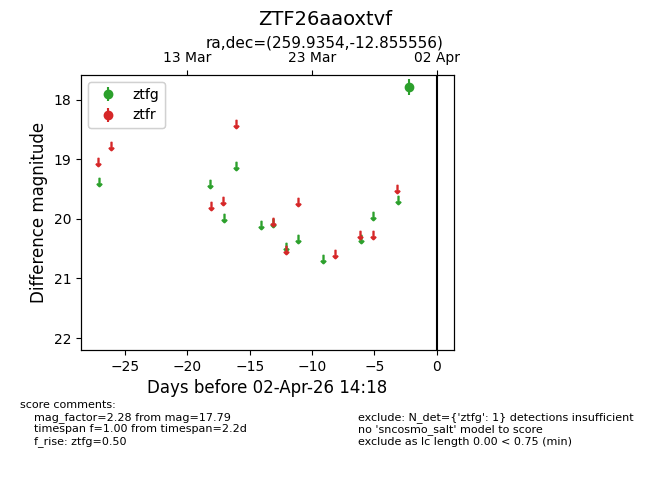
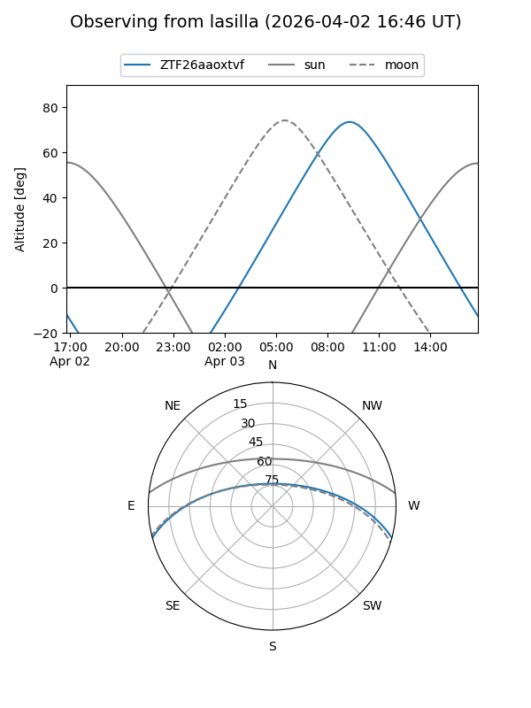
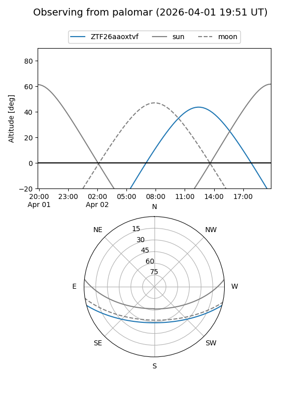

ZTF26aaoxtvf
Target ZTF26aaoxtvf at 2026-04-02 14:24
Aliases and brokers:
FINK: link
Lasair: link
ALeRCE: link
alt names
ZTF26aaoxtvf (ztf,fink_ztf)
Coordinates:
equatorial (ra, dec) = 259.9354,-12.85556
equatorial (HMS+DMS) = 17:19:44.49,-12:51:20.00
galactic (l, b) = (10.4734,+13.68109)
Flags:
Photometry:
last ztfg=17.79
1 ztfg detections
Lightcurve

Visibility


Additional plots